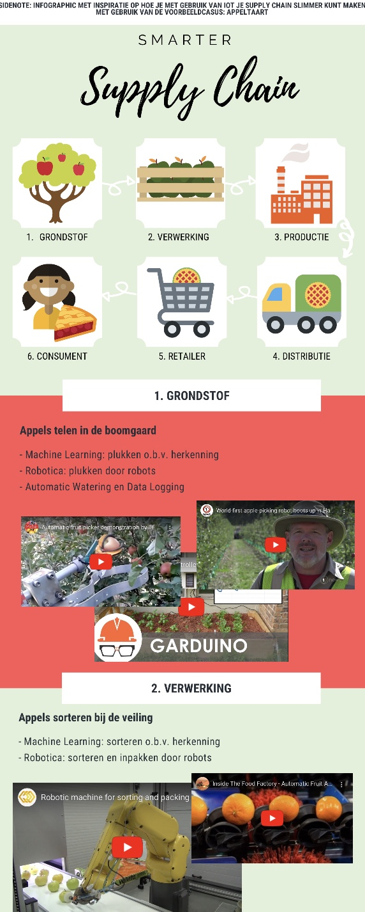
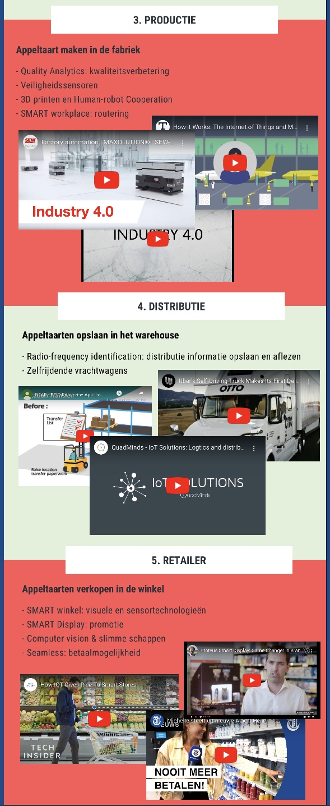
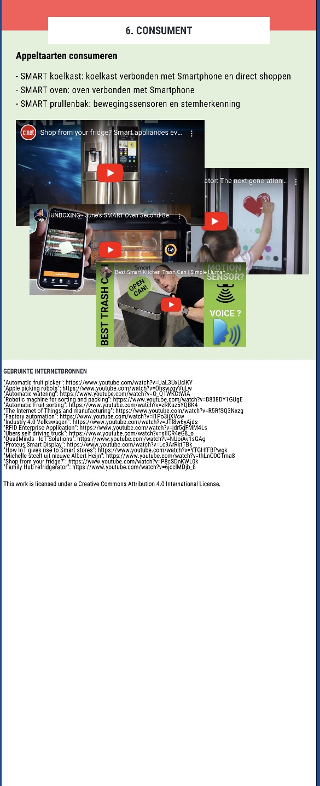

Smart Start moet u zien als de 'baseline' van de minor. Vanuit hier word het principe van Smart Industry of Industry 4.0 aangeleerd. Het doel van dit vak is om kennis aan te leren. Op technologisch vlak weet ik dat ik achterloop op anderen in hetzelfde vakgebied. Bij Smart Start is dit wel belangrijk dus zal ik goed onderzoek moeten doen.
Week 1: Smart Research en kruispunten
Om kennis aan te leren zal ik eerst moeten leren of mijn manier van onderzoek doen, een goede is. We krijgen tools aangereikt om ervoor te zorgen dat ik goed kan controleren of mijn opgezochte bronnen betrouwbare zijn. Tijdens de eerste les werd goed uitgediept hoe onderzoek gecontroleerd kan worden, en op welke gebieden Smart Industry toegepast kan worden, maar niet voordat we zelf lieten zien wat we als studenten in onze mars hebben. Daarom heb ik een onderzoekstraject uitgezet en gepresenteerd aan de klas. Dit onderzoekstraject heb ik tijdens mijn studie al vaker uitgevoerd, maar ik zou hem graag testen aan de klas, en kijken of ik hem nog aan kan scherpen op bepaalde zaken. De minor gaat tenslotte om verrijking en verruiming van de eigen kennis. Tijdens TBK ben ik ook vaak met onderzoek en betrouwbaarheid van bronnen bezig geweest. De weekopdracht voor Smart Start was dan ook om een wetenschappelijk artikel te schrijven dat de kruispunten van mijn studie met TBK beschrijft. Hierbij moet rekening gehouden worden met de 'user persona' van de lezer; wat voor persoon is de lezer?
Tijdens TBK ben ik ook vaak met onderzoek en betrouwbaarheid van bronnen bezig geweest. De weekopdracht voor Smart Start was dan ook om een wetenschappelijk artikel te schrijven dat de kruispunten van mijn studie met TBK beschrijft. Hierbij moet rekening gehouden worden met de 'user persona' van de lezer; wat voor persoon is de lezer?
Klik hier om de opdracht te bekijken
Week 2: Smart Research en Smart Industry
Nogmaals is het deze week taak om te leren hoe Smart Research verder gaat. Het gaat hierbij om het inrichten van mijn eigen onderzoeksomgeving, iets waar ik vorige week al mee bezig was. Google scholar kende ik al, maar de docent heeft ook Zatoro uitgelegd. Een onderzoeksassistent die als extensie beschikbaar is om goed bevonden artikelen op te slaan en te ordenen voor later gebruik.Om te laten zien wat ik geleerd heb, heb ik samen met Breyten en Jordi een kleine presentatie voor NXP gemaakt, na het maken van een eerste draft. NXP is één van de projectbedrijven, waar we op voorhand nog niks over wisten. Het was nu zaak om binnen de markt van NXP een 'Smart Technology' toe te passen dat het bedrijf kan gebruiken voor een nieuwe bedrijfsricthing of gat in de markt.
Klik hier om de opdracht te bekijken
Week 3: Value Proposition
In de derde week van de minor heb ik tijdens Smart Start geleerd hoe ik de kennis van week 1 en week 2 kan combineren. Na Smart Research gaan we verder richting een zogehete 'value proposition'. Dit betekent dat er vanuit Smart Industry waarde gecreërd moet gaan worden voor de klant. In feite is dit ook wat we bij het project gaan doen. Deze week is er geen weekopdracht geweest, maar enkel een voorbereiding op de les.Week 4: Smart Research processen
Week 4 staat wederom in het teken van het combineren van de kennis die opgedaan is in het teken van Smart Research en Value Proposition. Hierbij werd ik aan het nadenken gezet over hoe ik waarde voor de klant kan creëren, voornamelijk door het procesdenken. Dit heb ik tijdens mijn studie bijvoorbeeld geleerd bij het vak procesbeheersing. Tijdens Technische Bedrijfskunde heb ik al talloze keren de begrippen 'lean' en 'agile' gehoord en ook tijdens projecten die ik eerder gedaan heb, heb ik ze toegepast. Het was nu echter zaak om te laten zien dat ik het begrijp. Daarom heb ik een casus vanuit Bosch Rexroth (mijn oude stagebedrijf) gepakt om te illustreren hoe de procesoptimalisatie 'Smart' gemaakt kan worden. Bosch Rexroth is een heel traditioneel en log bedrijf. Daarom is het lastig om zo'n probleem (bijvoorbeeld tijdens een stage) aan te pakken. Toch heb ik getracht te laten zien dat ik de stof begrijp en dat ik de achterliggende gedachtes van 'lean' en 'agile' uit kan leggen.Klik hier om de opdracht te bekijken
Week 5: Smart Research en Organisaties
Langzamerhand werken we in de les naar het einde van de lesweken. Bij Smart Start heb ik ondertussen veel geleerd. De basis begon bij het slim onderzoeken; Smart Research. Vervolgens heb ik gekeken naar het toepassen van Smart Industry op de werkvloer in bedrijven. Het toepassen zelf (nog) niet, maar ik heb leren inzien hoe je er over na kunt denken. In de vijfde lesweek heb ik tijdens Smart Start gekeken naar de externe organisatie van een bedrijf. Een bedrijf kan namelijk van binnen heel slim ingericht worden, en er kunnen tal van 'Smart Solutions' ingezet worden om bedrijfsprocessen te optimaliseren, maar een externe omgeving heeft minstens net zo veel invloed. Daarom is het belangrijk om te beseffen dat Smart Industry ook hier toegepast kan worden. Tijdens de les hebben we gewerkt aan een infographic over de supply chain van een appeltaart. De infographic is gemaakt op PiktoChart.
  Om aan te tonen wat de moderne manier is van Smart Supply Chains inrichten, die de externe omgeving verbind met het bedrijf op een manier die de klant het meeste waarde geeft, heb ik zelf een poster ontworpen van een ontwerp dat ik zelf fascinerend vind; kijk zelf maar:
Klik hier om de voorbereiding te bekijkenIk heb getracht om mijn gedachten over te brengen op een poster voor de weekopdracht. Hoe men vroeger een stoel maakte door de traditionele manier; produceren in grote aantallen, op de markt reclame maken, en dan zoveel mogelijk exemplaren proberen te verkopen. Zoals de poster probeert te vertellen, zou de moderne 'Smart Supply Chain' op vraag pas een actie uitvoeren. Die actie kan bijvoorbeeld ook leasen zijn, omdat niet iedereen een stoel hoeft te bezitten, maar een voorwerp nodig heeft waar hij op kan zitten.
Week 6: Smart Research en Samenwerken
Als laatste toevoeging op de educatie vanuit Smart Industry voor Smart Start was het zaak om visievorming en cultuur aan te halen. Om een bedrijf te veranderen, is inzet vanuit de werkvloeren nodig, iets dat we later tijdens het project nog wel te weten zouden komen. Voor deze opdracht heb ik wederom een infographic (mede)ontwikkeld. Een infographic verteld soms gewoon meer dan andere communicatiemethoden. Smart Industry is namelijk niet alleen 'het bedrijf'. Smart Industry is ZEKER ook de werknemer, ofwel het bestand aan mensen, ofwel 'human capital'. Ook hier geld namelijk weer; hoe creëer ik klantwaarde? Nou door goed te produceren en iets te maken waar de klant wat aan heeft (kort door de bocht). Maar hoe doe ik dat vervolgens? Nou door te blijven investeren in de toekomst. Hoe investeer ik slim in de toekomst vraagt u? Nou door te investeren in de handen die het bedrijf dragen; de werknemers! Om te laten zien hoe dit gedaan kan worden is er dus een infographic gemaakt. Er zijn hierbij 6 stappen als basis genomen:
Klik hier om de opdracht te bekijken